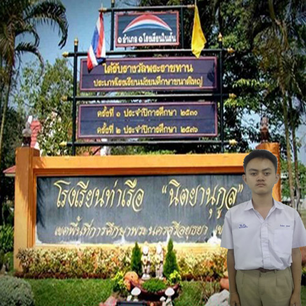

แนะนำโรงเรียน
ทางเข้า-ทางออก ประตู โรงเรียนท่าเรือ "นิตยานุกูล"
โรงเรียนท่าเรือ "นิตยานุกูล" เปิดทำการสอนครั้งแรก เมื่อวันที่ 29 มิถุนายน 2479
ประเภทของโรงเรียน :สหศึกษา มัธยมศึกษาขนาดใหญ่ เปิดสอนตั้งแต่ชั้นมัธยมศึกษาปีที่1-6 จำนวน 48 ห้องเรียน
วิสัยทัศน์ :คุณธรรมนำความรู้ คู่เทคโนโลยี มีพลานามัยสมบูรณ์
อัตลักษณ์ :ลูกนิตย์น่ารัก
เอกลักษณ์ :นิตยาน่าอยู่น่าเรียน
อุดมการณ์ :ความรู้ คู่ความดี มีทักษะ พลสมบูรณ์
ปรัชญญา:นิมิตตํ สาธุรูปานํ กตญญูกตเวทิตา ความกตัญญูกตเวที เป็นเครื่องหมายของคนดี
อักษรย่อ: น.ก.
สีประจำโรงเรียน:ขาว-แดง
ขาว: ความสะอาด อ่อนน้อม รวมหมู่คณะได้
แดง: ความแกร่งกล้า